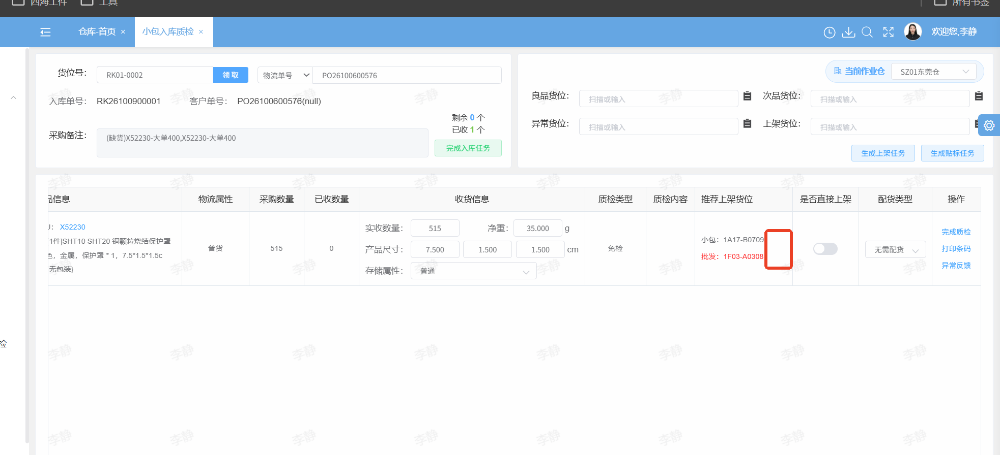
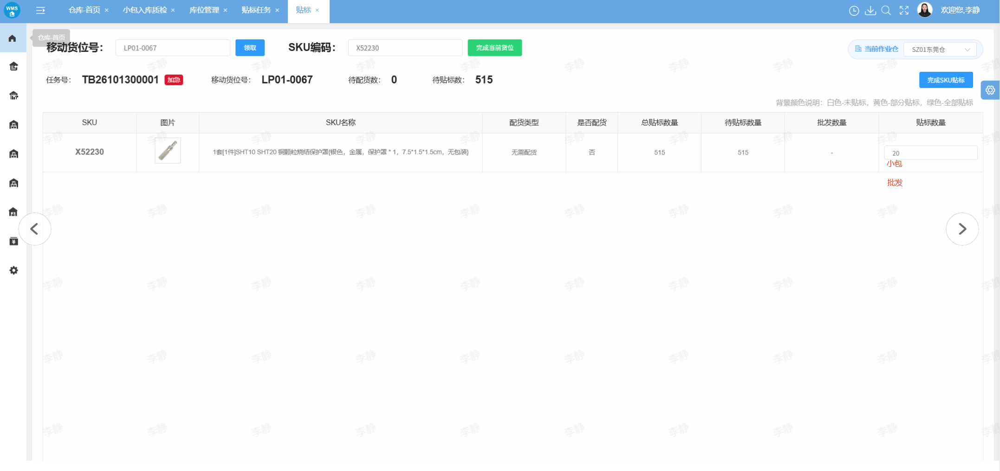
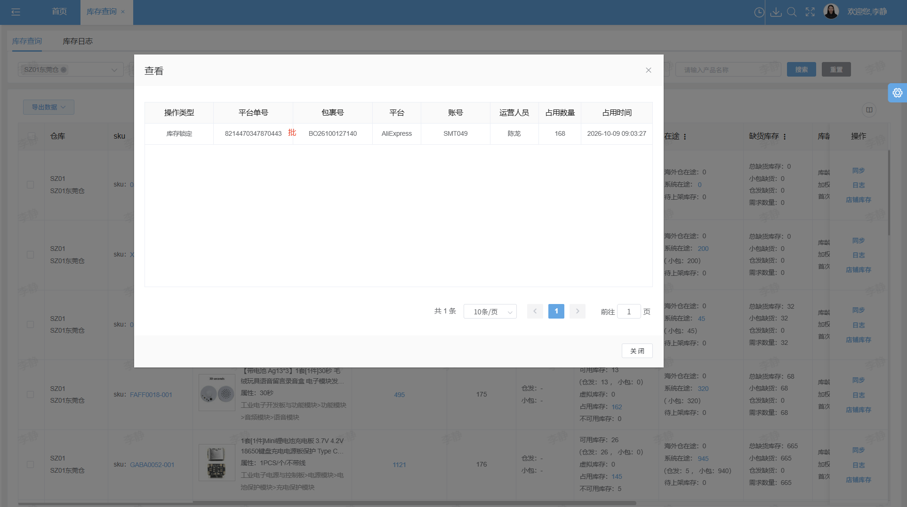

批发单分批来货需求文档
版本：V1.3（评审稿） · 日期：2026-10-13
涉及系统：仓库系统（WMS）、订单系统（OMS）
1. 需求目标
支持批发采购单分批到货：质检时按仓库规则分配批发、小包数量；上架后按实际数量回传订单系统并自动预占。采购单全部上架且完结后，订单未满足的需求使用普通小包可用库存补足。
2. 质检分配规则
仓库可独立配置以下规则。按采购单明细、SKU、仓库分别计算，分批到货使用各类型的剩余待收数量。
- 批发剩余待收 = 批发采购需求 − 此前累计已确认的批发分配数量。
- 小包剩余待收 = 小包采购需求 − 此前累计已确认的小包分配数量。
| 规则 | 批发分配数量 | 小包分配数量 |
|---|---|---|
| 规则1：批发优先 | min（本次实收，批发剩余待收） | 本次实收 − 本次批发分配 |
| 规则2：普通小包优先 | 本次实收 − 本次小包分配 | min（本次实收，小包剩余待收） |
规则2先满足普通小包需求，再将剩余数量分配给批发。
数量不得为负，两类分配之和必须等于本次实收，且不得超过各自剩余需求。超收需按确认后的超收流程处理，不自动归入某类库存。
质检页面
页面新增显示“本次分配（批发／小包）”。修改实收数量时，按仓库配置规则自动重算并更新两类分配数量。

3. 贴标数量录入
同一SKU同时有普通备货数量和批发数量时，贴标数量区域分别显示“小包”输入框和“批发”输入框。存在多个批发单时，每个BO单独显示一个批发输入框，左侧显示对应BO单号。
各输入数量按SKU、批次及库存类型保存；批发数量同时关联BO单号，供上架扫描查询。输入数量不得为负或超过对应待贴标数量，各批发单之间不得混用数量。

4. 上架与回传
质检分配是计划结果，最终库存归属以实际货位类型及上架数量为准，允许计划与实际上架不一致。
- 按批次记录实际批发、小包上架数量，并展示与计划分配的差异。
- 每次上架成功后，将本次实际增量回传订单系统，关联采购明细、SKU、仓库、批次及上架明细。
- 订单系统按实际批发可用库存自动预占绑定批发订单，预占不超过订单未满足需求；小包上架数量计入普通库存。
- 回传失败支持重试，重复回传不得重复增加库存或预占；状态先到时，等待上架数据同步完整后再执行最终校验。
批发单扫描数量
上架扫描识别到批发单时，按BO单号、SKU及当前入库批次查询数量，不直接截取条码中的数量。经过贴标的取贴标节点保存的对应BO输入数量；未经过贴标的取质检节点保存的对应批发数量。扣除该记录已上架数量后，显示本次待上架数量。
查不到对应记录或数量归属不明确时，提示无法获取上架数量并阻断提交，防止误取其他批次或其他BO的数量。
库存查询：占用单据标签
仓库系统 → 库存查询 → 占用单据查询，在平台单号旁按占用订单类型显示标签：批发订单显示“批”，定制订单显示“制”，普通订单不显示标签。

5. 订单库存校验
绑定采购单同时满足“全部已上架、已完结”，且上架数据同步完整后，执行补足校验：
- 根据实际批发上架数量及订单已有预占结果，先满足批发库存可保障的需求。
- 剩余需求 = 订单有效需求 − 该订单已有效预占数量，校验普通小包可用库存并预占。
- 库存满足后流转单据；不足时保持待库存状态，显示缺口。
可用库存沿用现有口径，扣除冻结及其他订单占用。重复校验不得重复占用或流转，并发预占不得超占。采购单未满足上述条件时，本需求暂不触发普通库存补足。
6. 业务案例
采购需求200，其中批发120、小包80；使用规则2，绑定批发订单需求120。
| 批次 | 本次实收 | 质检分配：批发／小包 | 实际上架：批发／小包 |
|---|---|---|---|
| 第一次 | 150 | 70／80 | 70／80 |
| 第二次 | 50 | 50／0 | 0／50 |
| 合计 | 200 | 120／80 | 70／130 |
第一次先满足小包80，剩余70分配给批发并完成批发预占。第二次小包计划已满足，质检分配批发50，但实际全部上普通货位。
采购单全部上架且完结后，订单已预占批发70，剩余50校验并预占普通库存。普通可用库存充足则流转；若无其他占用或冻结，普通库存130扣除补占50后剩余80。
7. 验收标准
| 验收项 | 预期结果 |
|---|---|
| 仓库规则 | 不同仓库可分别执行批发优先、小包优先 |
| 规则1 | 批发剩余100、小包50、实收50：批发50、小包0 |
| 规则2 | 批发剩余100、小包50、实收70：批发20、小包50 |
| 分批计算 | 第二批扣除此前已确认分配；不重复分配，不超过剩余需求 |
| 质检页面 | 新增本次分配（批发／小包），修改实收后自动重算 |
| 占用单据标签 | 批发订单显示“批”，定制订单显示“制”，普通订单不显示 |
| 贴标输入 | 小包与批发分开录入；多个BO逐单显示输入框及左侧BO单号 |
| 扫描数量 | 取对应贴标记录或质检记录，扣除已上架数量；不取条码数量 |
| 查询异常 | 无对应记录或归属不明时阻断提交并提示 |
| 实际归属 | 计划与实际分别保存，回传按实际上架数量 |
| 回传与预占 | 重试、重复事件及并发处理不重复入账、不超占 |
| 最终校验 | 全部上架、已完结、同步完整后补足；不足不流转 |
| 案例复现 | 实际批发70、小包130，订单以批发70＋普通50满足120 |